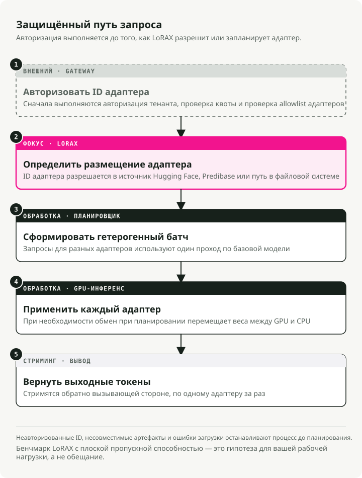
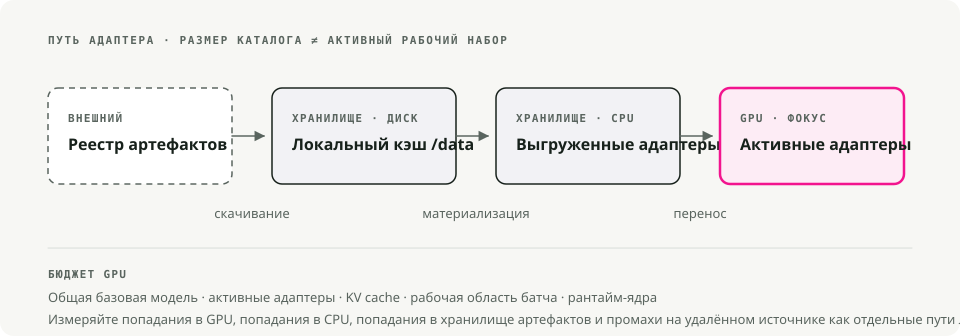

Автоматический перевод
Эта статья была автоматически переведена с оригинальной английской версии.
Руководство по развертыванию LoRAX: тысячи адаптеров LoRA на Kubernetes
Раньше для обслуживания десятков отточенных крупных языковых моделей требовалась одна видеокарта на каждую модель. LoRAX (LoRA eXchange) позволяет хранить в памяти единственную базовую модель и по мере поступления запросов быстро заменять её на легкие адаптеры LoRA. Стоимость обработки одного токена остается примерно неизменной при добавлении новых отточенных версий моделей.
В этом руководстве рассматриваются основы работы LoRA, ситуации, когда следует выбирать LoRAX вместо vLLM, способы его развертывания на Kubernetes с использованием официальной диаграммы Helm, а также инструкции по вызову REST-интерфейсов, библиотек на Python и API, совместимых с OpenAI.
Кратко: LoRAX полезен тогда, когда множество адаптеров LoRA используют одну и ту же базовую модель и требуется эффективная обработка запросов от нескольких пользователей одновременно. Самыми сложными аспектами являются маршрутизация адаптеров, управление памятью, группировка операций в пакеты, автомасштабирование и возможность отслеживания состояния системы, а не сама математика LoRA.
Предыстория: что такое LoRA?
Метод низкоранговой адаптации (LoRA) предполагает замораживание весов предварительно обученной модели и вставку небольших матриц, основанных на разложении ранга, в каждый слой трансформера. Вместо переобучения всей модели тренируется небольшой набор «различий», которые отражают новое поведение модели.
Полное доработка модели объемом 7 млрд параметров приводит к созданию файла размером более 20 ГБ. Адаптер LoRA для той же модели занимает около 100 МБ. Именно это различие делает возможной динамическую обработку запросов: можно хранить на диске тысячи адаптеров и загружать один из них в память GPU за считанные миллисекунды.
Проблема, которую решает LoRAX
Традиционный способ обслуживания нескольких моделей сопряжен с высокими затратами. Каждая доработанная модель требует собственной памяти GPU, поэтому для обслуживания 50 моделей, адаптированных под конкретных клиентов, необходимо выполнять 50 отдельных процессов развертывания, что требует в 50 раз больше памяти. Расходы растут линейно с каждым новым вариантом модели.
LoRAX — это проект под лицензией Apache 2.0 от Predibase. Он расширяет Сервер инференса для генерации текста в Hugging Face Благодаря динамической загрузке адаптеров, кэшированию весов с иерархией уровней и многократной обработке адаптеров в пакетах можно обслуживать сотни адаптеров LoRA, специфичных для отдельных тенантов, на одной GPU класса Ampere, не теряя при этом пропускную способность или задержку.
Секрет заключается в том, что процесс финальной настройки модели LoRA генерирует небольшие дельта-веса вместо полных копий модели. LoRAX сохраняет в памяти GPU только базовую модель и по мере необходимости встраивает веса адаптеров. Адаптеры, которые в данный момент не используются, не занимают никаких ресурсов VRAM.
Как это работает
Динамическая загрузка адаптеров
Веса адаптеров встраиваются непосредственно перед обработкой каждого запроса. Базовая модель остается в памяти GPU, в то время как адаптеры загружаются в реальном времени без блокировки других запросов. Можно хранить тысячи адаптеров, но оплачивать расходы памяти приходится только за те, которые активно обрабатывают запросы.
Кэширование весов с иерархией уровней
LoRAX размещает адаптеры по трём уровням: в VRAM GPU — для часто используемых адаптеров, в RAM CPU — для реже используемых, а также на диске — для хранения менее активных. Такая иерархия предотвращает сбои из-за нехватки памяти и обеспечивает достаточно быстрый процесс переключения между ресурсами, чтобы пользователи этого не замечали.
Постоянная многократная обработка адаптеров в пакетах
Именно здесь LoRAX изменяет подход к формированию пакетов. Он расширяя концепцию непрерывной обработки пакетов, позволяет параллельно работать с разными адаптерами, так что запросы, связанные с различными вариантами настройки модели, могут использовать один и тот же процесс передачи данных. Результаты тестов Predibase показывают, что обработка 1 млн токенов, распределённых между 32 разными адаптерами, занимает примерно столько же времени, сколько обработка 1 млн токенов с использованием одной модели.
Основа под всем этим — TGI
LoRAX основан на инфраструктуре Text Generation Inference (TGI) от Hugging Face, поэтому он наследует все её оптимизации: FlashAttention 2, механизм пагинированного внимания, ядра SGMV для работы с несколькими адаптерами и возможность потоковой генерации ответов. По сути, это TGI с динамической заменой адаптеров.
Стоимость за токен остаётся примерно постоянной
График наглядно иллюстрирует этот факт. Варианты сdedicated-развертыванием (тёмно-серый цвет) работают линейно: удвоение объёма моделей приводит к удвоению затрат. LoRAX (оранжевый цвет) сохраняет стоимость за токен практически неизменной при добавлении новых адаптеров. Даже сервисы тонкой настройки моделей через API от таких провайдеров, как OpenAI (светло-серый цвет), не могут конкурировать с ним в условиях работы с несколькими моделями.

Стоимость на миллион токенов при использовании все более тонко настроенных моделей. Затраты на работу LoRAX практически не меняются благодаря использованию механизма многоканальной обработки с адаптерами; в случае отдельных развертываний затраты растут линейно. Источник: LoRAX на GitHub.

Когда использовать LoRAX
LoRAX имеет смысл в нескольких конкретных ситуациях.
- Мультиарендная SaaS-платформа. Вы разрабатываете платформу, в которой каждый из 500 клиентов получает чат-бота, настроенного под их собственные данные. Традиционный подход требует развертывания 500 отдельных моделей. LoRAX обслуживает всех 500 клиентов с помощью одной GPU, загружая соответствующий адаптер при поступлении запроса от клиента.
- Маршрутизация с учётом специфики домена. Вы используете специализированные большие языковые модели для юриспруденции, медицины, финансов и инженерии. Вместо четырех отдельных версий моделей объёмом 13 миллиардов параметров LoRAX запускает одну базовую модель LLaMA 2 объёмом 13 миллиардов параметров и направляет запрос к нужному адаптеру в зависимости от домена.
- Быстрая экспериментация. Тестируете 10 подходов к настройке моделей в производственной среде? Разверните LoRAX один раз, а затем меняйте варианты, изменяя
adapter_idпараметр. Никаких изменений инфраструктуры или перезагрузок сервисов не требуется. - Развертывание в условиях ограниченных ресурсов или на периферии. Один процессор NVIDIA A10G может хранить квантизированную базовую модель объемом 7 миллиардов параметров вместе с десятками адаптеров, предназначенных для конкретных задач, вместо того чтобы использовать по одной видеокарте на каждую модель.
Архитектура: иерархия памяти и планирование запросов
LoRAX основан на трехуровневой иерархии памяти. Понимание её принципов помогает прогнозировать производительность и планировать объемы ресурсов.

LoRAX рассматривает каждый адаптер как легковесный «вид» общей базовой модели. Скрипт планирования объединяет запросы таким образом, что обработка 32 разных адаптеров происходит с той же скоростью, что и обработка одного, даже при пропускной способности в миллион токенов. Объем адаптеров обычно составляет от 10 до 200 МБ, в то время как полные модели занимают несколько гигабайт.
Развертывание LoRAX на Kubernetes
LoRAX поставляется вместе с чартами Helm и образами Docker, поэтому развертывание на Kubernetes происходит без сложностей.
Предварительные требования
Вам понадобится:
- Кластер Kubernetes с GPU от NVIDIA (поколение Ampere и новее: A10, A100, H100) NVIDIA Container Runtime настроено на узлах с GPU
kubectlиhelmустановлено локально – Постоянное хранилище для кэшей адаптеров; подключите PersistentVolume/dataв поде
Быстрое начало с официальной диаграммы Helm
Helm Это менеджер пакетов для Kubernetes. Он объединяет все ресурсы Kubernetes, необходимые приложению (Deployments, Services, ConfigMaps и т. д.), в один «чарт», что позволяет развернуть всё с помощью одной команды вместо ручного управления десятками файлов YAML.
# Clone the LoRAX repository and switch into it
git clone https://github.com/predibase/lorax.git
cd lorax
# Make sure kubectl can talk to your cluster
kubectl config current-context
kubectl get nodes
# Build chart dependencies (generates charts/lorax/charts/*.tgz)
helm dependency update charts/lorax
# Optional: render manifests locally to verify everything is templating
helm template mistral-7b-release charts/lorax > /tmp/lorax-rendered.yaml
# Deploy with default settings (Mistral-7B-Instruct)
helm upgrade --install mistral-7b-release charts/lorax
# Watch the pod come up
kubectl get pods -w
# Check logs to see model loading progress
kubectl logs -f deploy/mistral-7b-release-lorax
Диаграмма отображает создание объекта Deployment (по умолчанию один реплика) и сервиса типа ClusterIP, прослушивающего порт 80. Во время первого запуска базовая модель загружается с платформы Hugging Face в память GPU; этот процесс может занять несколько минут в зависимости от скорости сети и характеристик GPU. При последующих перезапусках используются уже сохранённые веса из постоянного тома.
Совет: Если helm upgrade --install возвращает Kubernetes cluster unreachableВаш контекст kubeconfig указывает на кластер, который находится в автономном режиме. Запустите локальный кластер (Docker Desktop, kind, minikube) или переключитесь на доступный контекст. kubectl config use-context. Запуск kubectl get nodes Перед развертыванием проверяется работоспособность сервера API.
Настройка базовой модели и масштабирования
Вы можете заменить текущую базовую модель или скорректировать количество ресурсов, создав файл с пользовательскими настройками. Ниже приведён пример. llama2-values.yaml:
# Use LLaMA 2 7B Chat instead of Mistral
modelId: meta-llama/Llama-2-7b-chat-hf
# Enable 4-bit quantization to save VRAM
modelArgs:
quantization: "bitsandbytes"
# Scale to 2 replicas for high availability
replicaCount: 2
# Request exactly 1 GPU per pod
resources:
limits:
nvidia.com/gpu: 1
Разверните с использованием собственной конфигурации:
helm upgrade --install -f llama2-values.yaml llama2-chat-release charts/lorax
Выполните эти команды из скопированной lorax/ репозиторий, в котором Helm может найти каталог шаблона. список совместимости моделей для новых добавлений.
helm uninstall mistral-7b-release
Это команда удаляет объекты Deployment, Service и все поды. Веса модели, сохранённые в кэше, остаются в PersistentVolume, если только вы сами не удалите их отдельно.
Работа с API LoRAX
После развертывания LoRAX предоставляет три способа взаимодействия с ним: REST API, совместимый с Hugging Face TGI, библиотеку клиентов на Python и конечную точку, совместимую с OpenAI. Все три варианта поддерживают динамическую замену адаптеров.
REST API
Этот... /generate Эндпоинт принимает JSON-загрузки, содержащие ваш запрос и необязательные параметры. Использование базовой модели без каких-либо адаптеров:
# Basic request to the base model (no adapter)
curl -X POST http://localhost:8080/generate \
-H "Content-Type: application/json" \
-d '{
"inputs": "Write a short poem about the sea.",
"parameters": {
"max_new_tokens": 64,
"temperature": 0.7
}
}'
Ответ включает генерированный текст и метаданные, такие как количество токенов и временные показатели.
Добавить элемент adapter_id параметр для указания модели с финтунингом. Вот пример использования адаптера, специализированного на математических вычислениях:
curl -X POST http://localhost:8080/generate \
-H "Content-Type: application/json" \
-d '{
"inputs": "Natalia sold 48 clips in April, and then half as many in May. How many clips did she sell in total?",
"parameters": {
"max_new_tokens": 64,
"adapter_id": "vineetsharma/qlora-adapter-Mistral-7B-Instruct-v0.1-gsm8k"
}
}'
При первом вызове к новому adapter_id, LoRAX загружает адаптер с Hugging Face Hub и кэширует его в /data. Последующие запросы используют кэшированную версию. Вы также можете загружать адаптеры из локальных путей, установив "adapter_source": "local" рядом с путем к файлу.
Клиент на Python
Для программного доступа установите lorax-client package:
pip install lorax-client
Клиент оборачивает REST API чистым интерфейсом:
from lorax import Client
# Connect to your LoRAX instance (default port 8080)
client = Client("http://localhost:8080")
prompt = "Explain the significance of the moon landing in 1969."
# 1. Generate using the base model (no adapter loaded)
base_response = client.generate(prompt, max_new_tokens=80)
print("Base model:", base_response.generated_text)
# 2. Generate using a fine-tuned adapter
# The adapter_id can be a Hugging Face repo ID or a local path
adapter_response = client.generate(
prompt,
max_new_tokens=80,
adapter_id="alignment-handbook/zephyr-7b-dpo-lora",
)
print("With adapter:", adapter_response.generated_text)
Клиент поддерживает стриминг, параметры декодирования (temperature, top-p, repetition penalty) и информацию на уровне токенов. См. справочный материал для клиента для продвинутого использования.
Конечная точка, совместимая с OpenAI
LoRAX реализует API Chat Completions от OpenAI под /v1 path. Это позволяет использовать LoRAX в инструментах, ожидающих формат API OpenAI: LangChain, Semantic Kernel или собственных приложениях. model поле для указания адаптера, который необходимо загрузить:
import openai
# Point the OpenAI client at LoRAX
openai.api_key = "EMPTY" # LoRAX doesn't require an API key by default
openai.api_base = "http://localhost:8080/v1"
# The model parameter becomes the adapter_id
# This allows seamless integration with tools like LangChain
response = openai.ChatCompletion.create(
model="alignment-handbook/zephyr-7b-dpo-lora",
messages=[
{"role": "system", "content": "You are a friendly chatbot who speaks like a pirate."},
{"role": "user", "content": "How many parrots can a person own?"},
],
max_tokens=100,
)
print(response["choices"][0]["message"]["content"])
Из этого следуют два практических случая применения:
- Замена без изменений. Мигрируйте существующие приложения с хостинговых моделей OpenAI на собственную инфраструктуру, изменив всего одну строку конфигурации.
- Интеграция с инструментами. Используйте LoRAX с любыми фреймворками, уже поддерживающими API OpenAI, без необходимости написания специального кода-адаптера.
Первый запрос к новому адаптеру сопровождается более высокой задержкой из-за процесса его загрузки и подключения через LoRAX. В приложениях, ориентированных на пользователя, необходимо учитывать это, предзагружая популярные адаптеры или отображая состояние загрузки.
Компромиссы
Что делает LoRAX хорошо
- Множество моделей на одном GPU. Сотни или тысячи отрегулированных под конкретные задачи моделей могут работать на одном GPU вместо развертывания по одной модели. Расходы практически не меняются при добавлении адаптеров.
- Отсутствие неработающей памяти. Адаптеры загружаются по мере необходимости. Неиспользуемые модели не занимают VRAM. Можно хранить каталог из 1000 и более специализированных моделей, оплачивая только те, которые активно обрабатывают запросы.
- Стабильная пропускная способность. Благодаря непрерывной обработке запросов с использованием нескольких адаптеров задержки и пропускная способность остаются близкими к показателям работы с одной моделью. Тесты Predibase показывают, что параллельная работа 32 адаптеров добавляет минимальное дополнительное нагрузку по сравнению с работой с одним адаптером.
- Использование технологии TGI. Решение основано на технологии Hugging Face TGI, поэтому доступны функции FlashAttention 2, пагинированного внимания, потоковой обработки и ядер SGMV для инференса с несколькими адаптерами.
- Полная операционная готовность. Поддержка Docker-образов, Helm-чартов, метрик Prometheus и трейсинга OpenTelemetry. Разрешение лицензии Apache 2.0 не налагает коммерческих ограничений.
- Широкая поддержка моделей. Работает с LLaMA 2, CodeLlama, Mistral, Mixtral, Qwen и другими. Поддерживается квантование (4 бита с использованием bitsandbytes, GPTQ, AWQ) для сокращения объема используемой памяти.
Ограничения
- Только LoRA. Все адаптеры должны быть получены в результате тонкой настройки по схеме LoRA для одной и той же базовой модели. Полная настройка, приводящая к созданию автономных моделей, не будет работать без дополнительной конвертации. Для разных базовых архитектур требуются отдельные реализации LoRAX.
- Проблема «холодного старта». Первый запрос после запуска загружает базовую модель в память GPU (от 30 до 90 секунд для более крупных моделей). Первый запрос к новому адаптеру сопровождается задержкой из-за загрузки данных с Hugging Face. Учитывайте это при использовании механизмов проверки работоспособности и предзагрузки данных.
- Проблемы кэширования при внезапном скачке нагрузки. Если объём трафика резко возрастает и охватывает десятки различных адаптеров, LoRAX вынужден перемещать веса между памятью GPU, оперативной памятью CPU и диском. Замена адаптеров из оперативной памяти занимает примерно 10 мс, но очень большой объём данных может вызвать временное замедление работы. Следите за уровнем памяти GPU и коэффициентом успешного доступа к кэшу адаптеров.
- Активно развивающийся проект. LoRAX был отфоркован от TGI в конце 2023 года, и он быстро меняется. Ожидайте частых обновлений и периодических изменений, поскольку проект следует за развитием исходного TGI. В продакшене используйте фиксированные версии.
LoRAX против vLLM
vLLM Это ещё один движок обслуживания с высокой пропускной способностью, который недавно получил поддержку множественных LoRA-моделей. Оба решения предназначены для решения разных задач.
| Функциональность | ||
|---|---|---|
| Основная задача | Огромный масштаб: сотни или тысячи адаптеров | Высокая пропускная способность: максимальное количество токенов в секунду при меньшем количестве активных адаптеров |
| Архитектура | Динамическое замещение; активная переносимость нагрузки на процессор/диск | Пакетизация, настроенная для одновременной обработки активных адаптеров |
| Лучше всего подходит для | SaaS с длинным хвостом: тысячи арендаторов, эпизодическое использование | Уровни с высоким трафиком: 5–10 активно используемых адаптеров |
| База | Hugging Face TGI | Специализированный движок PagedAttention |
Выбирайте LoRAX, если у вас большое количество адаптеров (по одному на пользователя, большинство из которых находятся в состоянии покоя большую часть времени), при котором целесообразно использование иерархической кэширования. Выбирайте vLLM, если у вас небольшой набор очень активных адаптеров и наибольшее значение имеет первичная пропускная способность.
Начало работы
Практический план действий от прототипа до продакшена:
1. Начните с малого
Разверните LoRAX с используемой вами базовой моделью и 3–5 репрезентативных адаптеров. Проверьте корректность загрузки адаптеров и измерьте базовое время задержки для вашей рабочей нагрузки.
2. Измерение и профилирование
- Отслеживайте коэффициенты успешных обращений к кэшу адаптера и использование памяти GPU в условиях реалистичного трафика.
- Определите «горячие» адаптеры (те, что входят в топ 20% по объёму запросов) и рассмотрите возможность их предзагрузки при запуске.
- Измеряйте задержки P50, P95 и P99 как для загрузок с кэшированными адаптерами, так и для загрузок с «холодными» адаптерами.
3. Оптимизация под вашу нагрузку
- Если несколько адаптеров пользуются высокой популярностью, увеличьте выделение памяти GPU, чтобы больше из них оставалось в активном состоянии.
- Если нагрузка распределена равномерно между сотнями адаптеров, настройте иерархическую кэш-память для балансировки использования RAM и диска.
- Используйте квантизацию (4-битный bitsandbytes или GPTQ), если у вас ограничен объём VRAM.
4. Горизонтальное масштабирование
После того как будет понятно поведение системы с одним экземпляром, добавьте реплики для обеспечения высокой доступности. Разместите перед системой балансировщик нагрузки, который будет осуществлять маршрутизацию по adapter_id Таким образом, запросы к одному и тому же адаптеру направляются к одному и тому же реплике. Это способствует повышению локальности кэша.
5. Мониторинг
Настройте панели управления для отслеживания уровня использования GPU, метрик кэша адаптеров и задержек запросов в разбивке по адаптерам. Обращайте внимание на проблемы с кэшем во время пиков нагрузки и соответственно корректируйте параметры масштабирования.
Благодаря LoRAX выполнение N процедур финальной настройки превращается в задачу маршрутизации на одном GPU, а не в проблему выделения ресурсов на N GPU.
Основные выводы
- Обслуживание адаптеров LoRA представляет собой задачи маршрутизации и управления памятью.
- Один базовый модель вместе с несколькими адаптерами может оказаться дешевле, чем отдельная полностью настроенная модель для каждого абонента.
- Группировка запросов работает эффективно только в том случае, если слой обслуживания понимает информацию о расположении адаптеров и стоимости их замены.
- Kubernetes обеспечивает дополнительные возможности для оперативного управления, но лишь при условии, что метрики отражают задержки на уровне адаптеров, количество успешных обращений к кэшу и количество сбоев.
Ссылки
- Predibase LoRAX на GitHub - среда выполнения для обслуживания нескольких моделей LoRA. Статья о LoRA - адаптация с низким рангом. Документация Hugging Face PEFT - тонкая настройка с эффективным использованием параметров. Документация Kubernetes - оркестрация контейнеров.